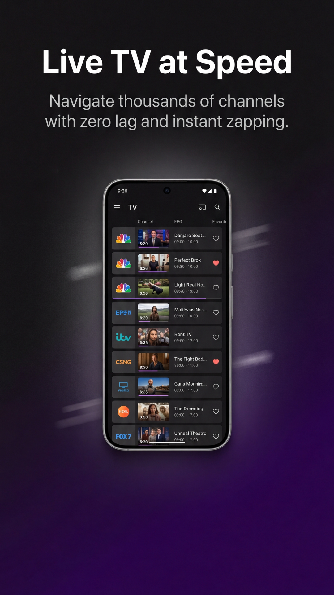
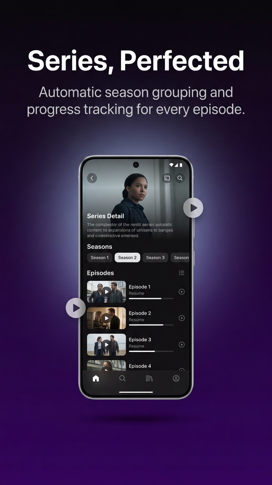

Vous venez de télécharger StreamVision IPTV et vous souhaitez ajouter votre contenu ? Que vous utilisiez une URL M3U simple ou l'API Xtream Codes, ce guide vous explique tout de A à Z. Rappel : StreamVision est un lecteur technique et ne fournit aucun contenu par défaut.
1. Ajouter une Playlist via URL M3U
Le format M3U est le standard universel de l'IPTV. Il se présente sous la forme d'un lien (URL) commençant souvent par http://.
1 Ouvrez l'application et cliquez sur l'icône "+" ou "Ajouter une playlist".
2 Sélectionnez l'option "Lien M3U".
3 Collez l'URL complète fournie par votre abonnement ou service légal.
4 Donnez un nom à votre liste (ex: "Ma TV Salon") et validez.

StreamVision va alors analyser le lien, télécharger la liste des chaînes et récupérer les logos automatiquement. L'interface Cinema classera vos chaînes par groupes (Sports, Divertissement, etc.).
2. Configurer l'API Xtream Codes
L'API Xtream Codes est recommandée si vous avez beaucoup de contenu VOD (Films et Séries), car elle permet une navigation beaucoup plus rapide et fluide.
1 Choisissez "Xtream Codes API" dans le menu d'ajout.
2 Saisissez l'URL du serveur (incluant le port, ex: :8080).
3 Entrez votre Nom d'utilisateur et votre Mot de passe.
4 Cliquez sur "Connexion".

L'avantage majeur de l'Xtream Codes sur StreamVision est la synchronisation en temps réel : si votre fournisseur ajoute un nouveau film, il apparaîtra automatiquement sans que vous n'ayez besoin de rafraîchir la liste.
3. Astuces pour un streaming fluide
Pour éviter les coupures ou les lags, voici nos recommandations d'experts :
- Utilisez le mode PiP : Activez le Picture-in-Picture pour continuer à regarder votre émission tout en utilisant d'autres apps.
- AirPlay : Si vous avez une Apple TV, utilisez le bouton AirPlay natif de StreamVision pour une qualité d'image optimale sur grand écran.
- Verrouillage parental : Vous pouvez cacher certains groupes de chaînes directement dans les réglages de la playlist.
Une question ? Un problème ?
StreamVision est 100% gratuit. Si vous appréciez l' application, laissez-nous une note sur l'App Store !